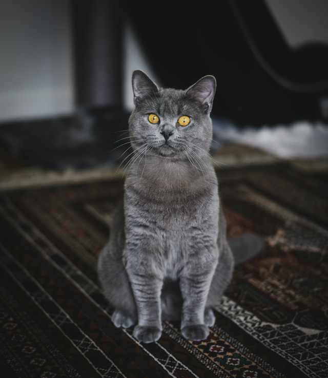
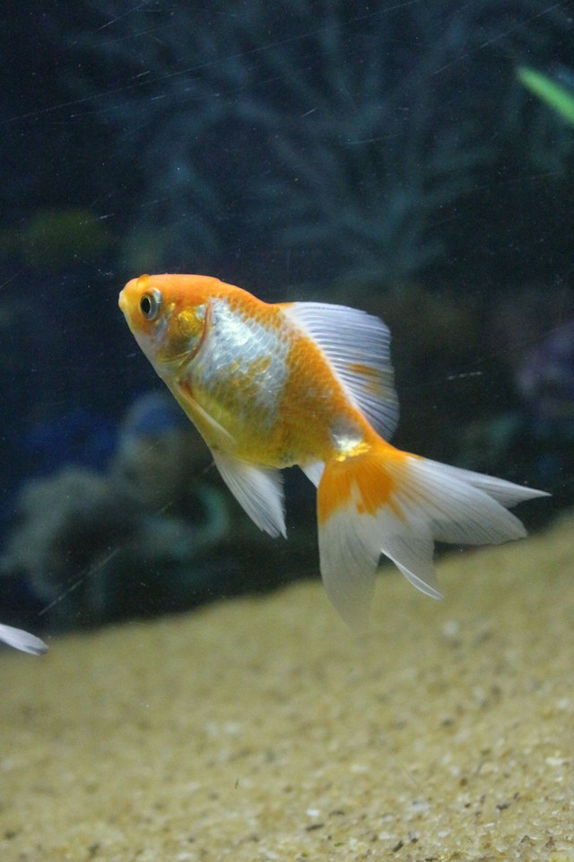
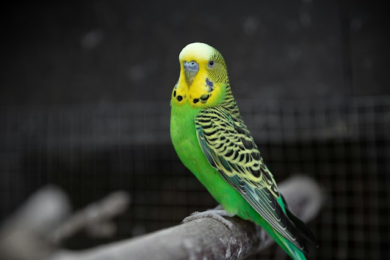
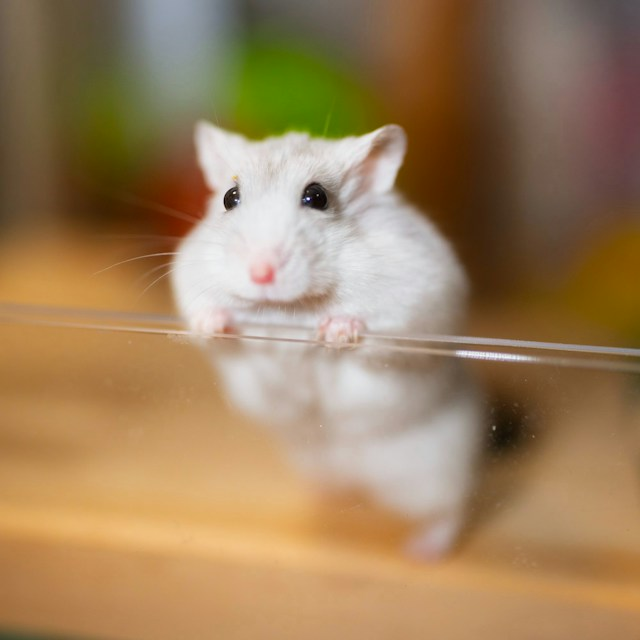
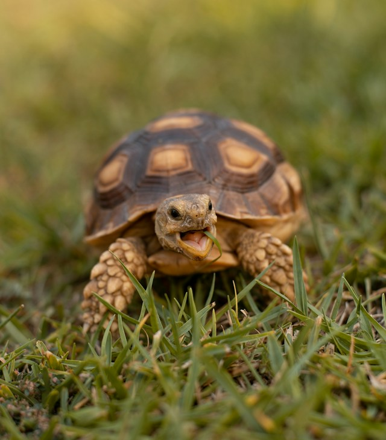

Британська короткошерста
Спокійна й доброзичлива порода, підходить для квартирного утримання.

Спокійна й доброзичлива порода, підходить для квартирного утримання.
Активна порода, потребує щоденних прогулянок і фізичних навантажень.

Невибаглива акваріумна риба, підходить для початківців.

Товариський і балакучий птах, легко звикає до рук за регулярного спілкування.

Невеликий нічний гризун, якому достатньо просторої клітки й колеса для бігу.

Водно-суходільна черепаха, потребує акватераріум з підігрівом і УФ-лампою.